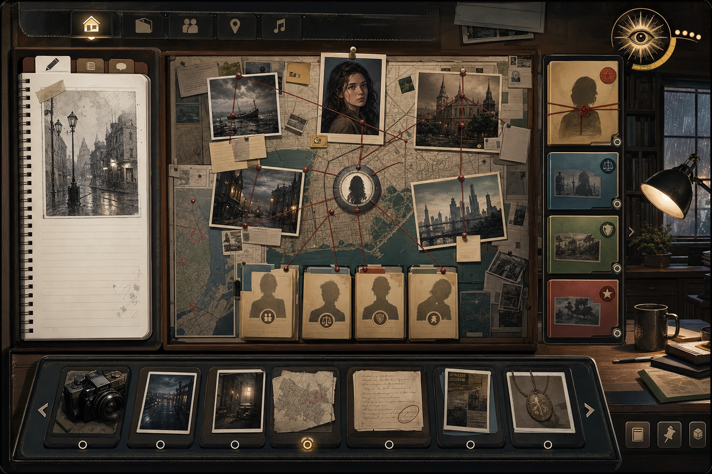
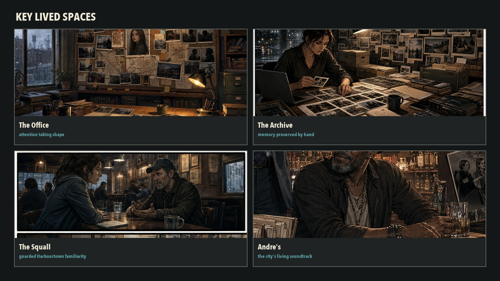
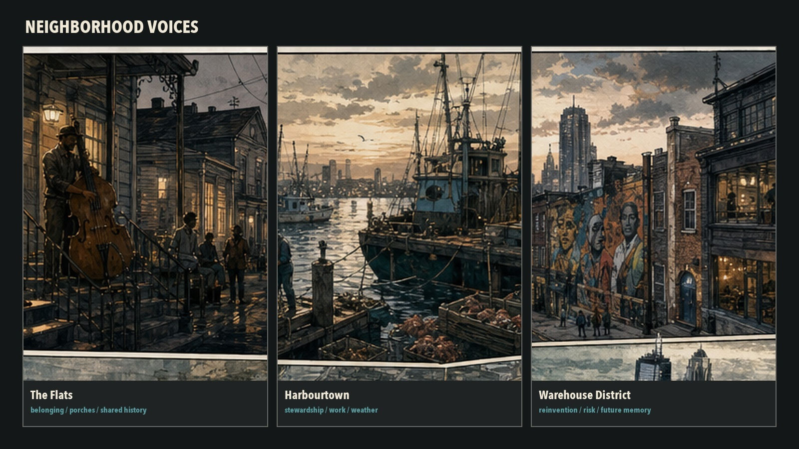

Investigate
Study environments, records, photographs, and contradictions. Build theories on the agency’s evolving case board.
In development · visual concept
A graphic-novel detective game where attention shapes the investigation.
Explore a living city. Photograph what others overlook. Question people who have reasons not to answer. Decide what deserves a place on the board.
“Something isn’t kosher at the docks. Go to Harbourtown. Ask about the Blue Containers.”
Existing Saint Meridian visual development · not gameplay footage
How it plays
Photograph details. Write notes. Connect evidence. Revisit people and places. What you choose to follow influences which questions surface, which relationships deepen, and which leads the agency pursues.
Look everywhere and the real pattern may disappear into noise.
Attention creates gravity. Judgment gives it value.

Concept interface · visual development
Book One · Chapter One
An anonymous voicemail sends the agency to Harbourtown, where a regulated container has vanished behind paperwork that says nothing unusual happened.
What begins as a question about an altered ID widens into diverted medical supplies, compromised workers, institutional protection, and an old pattern preserved in Bella Moreau’s photographs.
From Saint Meridian’s visual atlas


The project
Study environments, records, photographs, and contradictions. Build theories on the agency’s evolving case board.
Return to neighborhoods and people outside the immediate demands of a case. Learn why the city matters.
Bella Moreau’s disappearance anchors Book One. Her photographs preserve what the city learned not to see.
Designed for desktop, tablet, and mobile. Early visual development shown; representative gameplay will be identified when available.
Development updates + early testing
Receive occasional development notes, new concept work, and invitations to audience research, beta testing, and future playtests. No weekly noise.